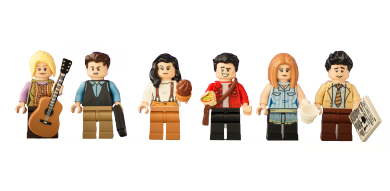
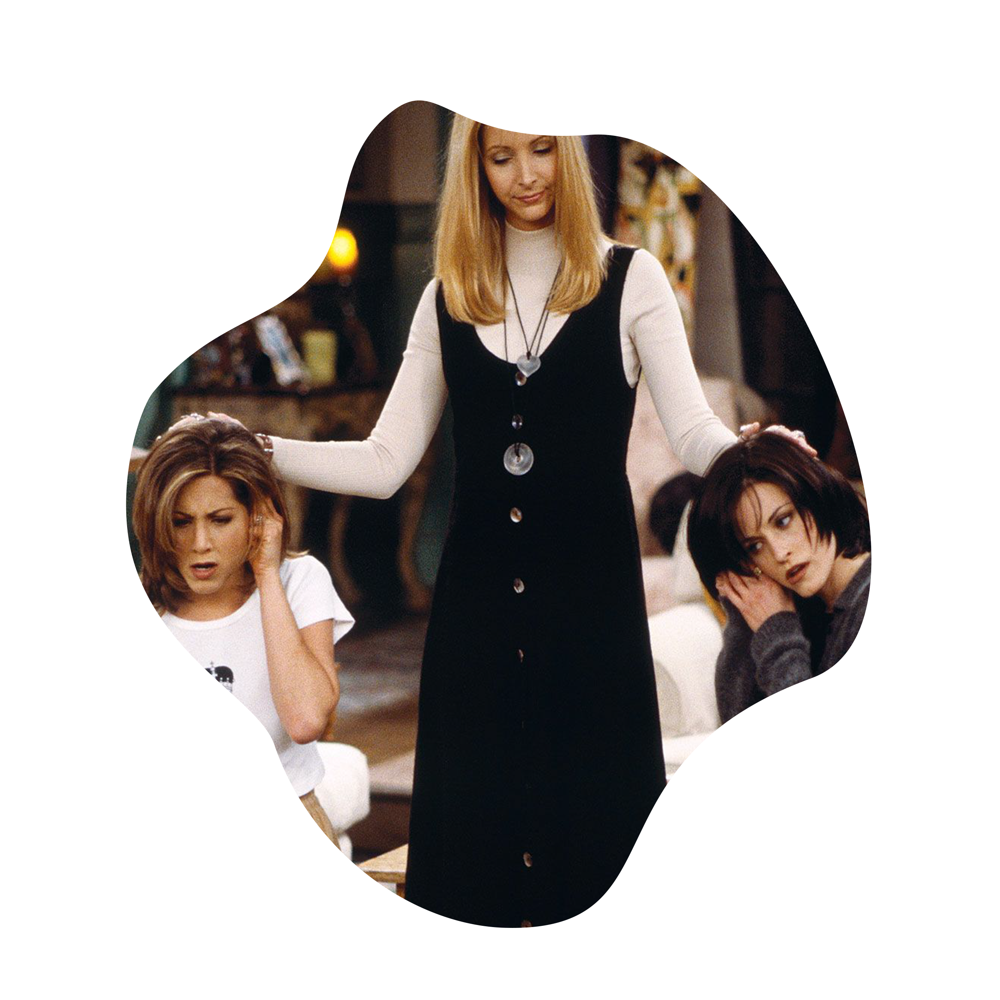
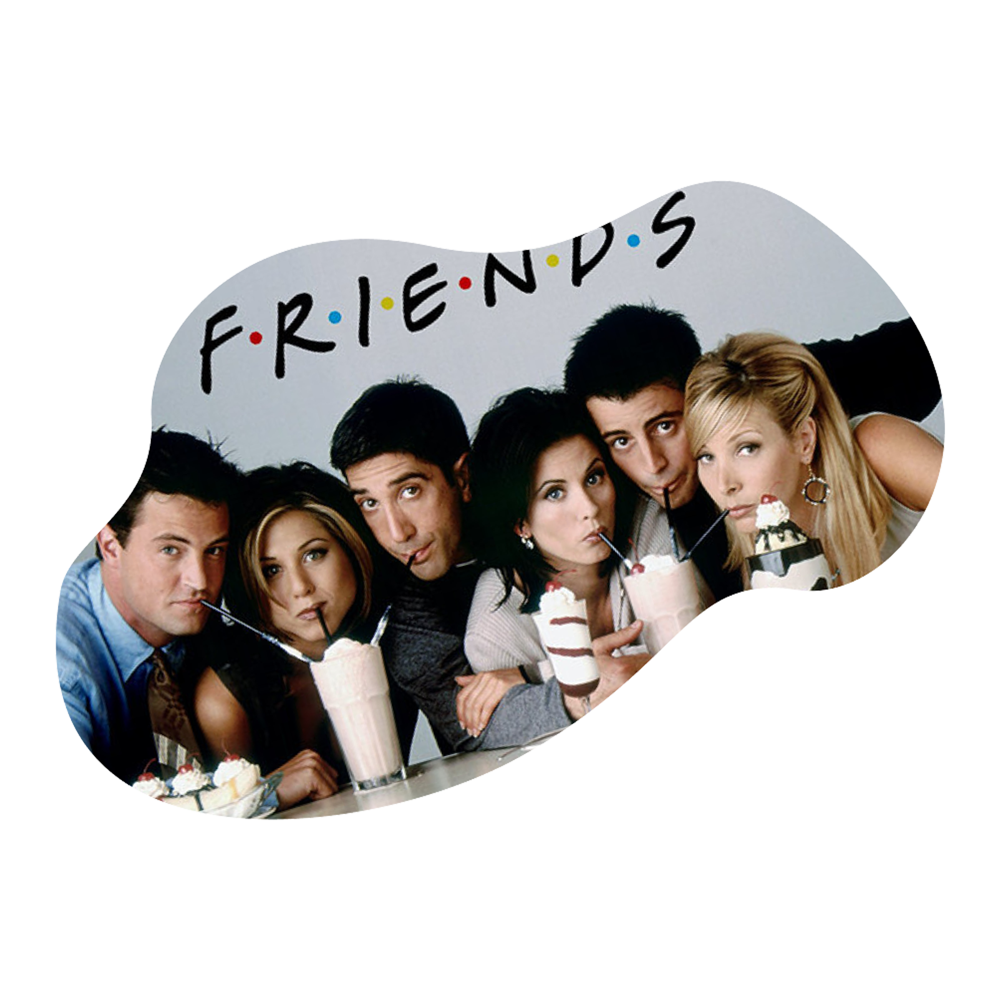

About
Born February 16, 1969, Phoebe is one of 6 characters from the American television
sitcom Friends and portrayed by Lisa Kudrow. Although known for her
eccentricity and kind-heartedness, she has been through a lot.
 “If we were in prison, you guys would be like my bitches.”
Early Life
“She's your lobster. Come on, you guys.
It's a known fact that lobsters
fall in love and mate for life.”
Friends
